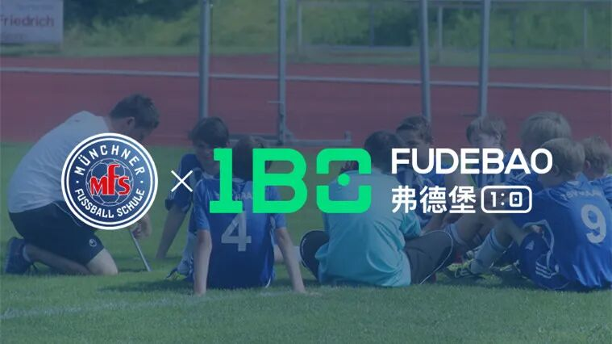
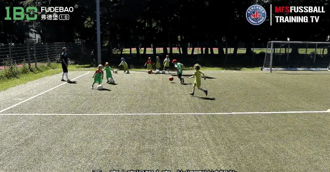

之前给大家简单的说了说一个孩子成长为一名职业球员的过程，
这里再结合我现在的合作方慕尼黑足球学校的青训理念，来总结一下，以职业球员为目标，不同阶段孩子的训练重点。

在德国，通常孩子的足球训练的开始是在6岁左右，对应的是德国足球体系下的Bambini（幼儿）阶段。
这个阶段的孩子的特点是：神经系统发育不完全，注意力不能长时间集中。
因此该阶段的重点应该放在培养孩子的兴趣，通过一些足球游戏，让孩子掌握足球基本功即可。
该阶段可以练习基本的带球跑动，传球、停球、射门等，可以加入一些简单技巧的练习，如拉球前推，脚后拉球等原地技巧。重点是要将这些结合在游戏中：

这个年龄段孩子自身比较好动，基础运动量足够，因此身体方面则没有必要做专门的体能练习
接下来8-10岁（对应德国的F组及E组），这个节点上，如果孩子仍对足球感兴趣，就可以继续进行足球训练了，这个阶段孩子的兴趣仍然是第一位的。
此时，孩子的神经系统发育进入敏感期初期，是构建球感和提升身体协调性与灵活性的重要阶段。
身体方面，可以加入一些简单的协调练习，当然，还是要结合一些技巧，比如简单的敏捷梯跳跃或者跨栏练习，帮助小球员掌握正确的跑步动作。力量、静态稳定性训练在这个阶段是没有必要的。
技术方面，可以进行一些稍微有些难度的动作技巧，比如简单的跨步动作、假传转身等，我们在1B0足球小程序与网站中都会对动作技巧的适用年龄和难度进行标注，大家可以很方便的查看。
（这里补充一下，不是单纯的练习动作技巧，而是要以动作技巧为核心构建训练单元提升球员技术能力，具体可以参考为
【链接：为什么要让孩子练习过人动作技巧？】
）
此外，这个阶段还要让球员练习左右脚的射门技术，这个年龄段重点练习的是射门力量，要能用两只脚踢出球速较快的射门。但此时不用要求球员的脚法，电梯球弧线球之类的在这个阶段练习是没有意义的。停球摆脱的相关技术也要开始练习。
这个阶段开始，还要初步培养球员的战术配合意识，加入一些二过一、后套这样的两人配合，可以将这些结合在传球和对抗练习中。
该阶段参考训练：
一般情况下，孩子在12岁左右神经系统的发育会全部完成，过了这个窗口期后球感、技术、身体协调性、脚下频率这些想要得到进一步的提升会变得尤为困难，因此11-13岁这个阶段非常关键（对于成为职业球员来说）。
这个阶段训练某种意义上可以决定球员未来能达到的上限，欧洲职业俱乐部也是从完成这个阶段训练的孩子中进行选材，大多数我们耳熟能详的球星都是在这个阶段过后开始崭露头角，被各大豪门盯上的。

这个阶段的练习重点仍然在技术、速度与协调性上，因为过了这个阶段后这些能力就很难有质的提升了。
球员要在这个阶段掌握所有比赛中用到的技术：掌握并反复练习绝大部分动作技巧，进一步提升球感与技术，需要对长传射门脚法进行练习，左右脚都能踢出高质量长传，完成高质量射门。
更复杂的协调练习也要加入球员的训练日常中，重点在提升球员的脚下频率，可以结合技巧、1对1和一些简单配合进行更有难度的协调与速度练习。
这里可以参考之前的文章【链接：【青训理念】 复杂的协调性训练1】
技术、球感、身体协调性，这些的本质其实就是人的神经系统对身体肌肉的控制能力，因此12岁左右神经系统发育的窗口期，对于一个孩子能否成为职业球员是至关重要的。
等到13-15岁这个年龄段，孩子逐渐进入青春发育期，不同的孩子时间会有所不同，有的甚至会更晚，标志就是球员会猛长个子。
青春期孩子的身体将发生较大的变化，这个阶段的重点是让孩子的运动能力适应自己的“新身体”

这个阶段的具体训练内容与上个阶段可以不做太多变换，在此基础上更多加入战术的部分。
可以让球员再练习一些更具挑战性的动作技巧，可以进行一些五人制和七人制的战术讲解与练习（国内则替换为8人制）。
在青春发育前，就要引入一些动态力量与稳定性的练习，但不要把这些加在训练课中，可以在每次训练课结束10分钟后，加练一些简单的功能性动作练习，比如药球上举，或者动态及静态的平板撑与臀桥。
对于更大年龄孩子，比赛与战术将占据更多
结束青春发育后，这个阶段还在坚持训练的孩子基本上是要选择职业道路了。该阶段对于身体与战术（比赛）的训练将成为重点，为即将到来的职业生涯做好准备。

当然，技术训练也是不能停的，但这个阶段应该已经没有新的技术动作（动作技巧）要进行学习了，只是不断地巩固。
比赛战术方面，在之前的文章中有过详述，大家可以翻看公众号历史文章，这里不在赘述。
体能方面，基本的协调与速度练习肯定还是不能少的，但难度需要不断提升。
除了这些及前面说到的，在孩子青春发育完成后，可以将力量训练安排在训练日常中，重点提升上肢与核心力量，但强度仍然不宜过大，每周额外进行1个小时的训练量就差不多。力量训练的内容需要教练根据孩子情况安排，逐步提升强度，循序渐进提升。
需要注意的是，比赛前一天不要给孩子安排下蹲动作的练习，这样会削弱孩子的运动表现。

文字与图片版权归各自权利人所有；排版根据抓取内容整理。